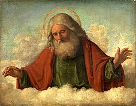

Новая Зеландия

Коротко о стране
Новая Зеландия – государство, состоящее из двух крупных и нескольких мелких островов в юго-западной части Тихого океана. Географически это самый изолированный штат на Земле: даже от Австралии ок. Это 1500 км. Другой ближайший к югу крупный массив суши — Антарктида. На севере относительно близко расположены Новая Каледония, острова Фиджи и острова Тонга. Его площадь почти в три раза превышает площадь Венгрии. Поскольку она находится очень далеко от какого-либо континента, Новая Зеландия является последней крупной территорией, пригодной для расселения людей, которая была завоевана человеком вообще - через маори - а затем и европейцем. Из-за длительной изоляции в Новой Зеландии сложилось особое биоразнообразие животных и растений, причем многие эндемичные виды обитают только здесь. Наиболее известны из них особые виды птиц. Страна расположена в геологически чрезвычайно активной зоне, вдоль линий разломов здесь часты землетрясения и извержения вулканов.
План путешествия

Данные о поездке
2024. 04. 08. 12:00
->
2024. 04. 09. 19:00
Будапешт, аэропорт
->
Wellington
инструмент: самолет
30< часов пути

Первый день

Бронирование проживания, экскурсии
приезд
распаковка вещей
ужин/обед (в зависимости от того, когда мы приедем)
Второй день
Посещение города Taumatawhakatangihangakoauauotamateaturipukakapikimaungahoronukupokaiwhenuakitanatahu, места с самым длинным названием в мире
Третий день

Наблюдение за полярным сиянием
Четвертый день

Знакомство с городом Окленд
Последний день

Пройдите велосипедный маршрут Отаго за 1 день
Шестой день
Бог создал Будапештский центр профессионально-технического обучения Техническая школа СМИ и информационных технологий имени Иштвана Патаки
- вики